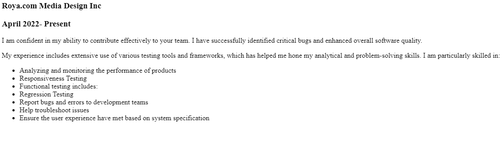

Professional Certifications

ISTQB Foundation
Software Quality Assurance Manual Testing

Web Development
Philippine Web Designers Organization
A professional and self-motivated QA Tester with expertise in manual testing, software quality assurance, and ensuring exceptional user experiences across web and mobile applications.
Since 2022
Comprehensive testing strategies and defect identification
Cross-device compatibility and mobile optimization
Monitoring and analyzing product performance metrics
Content validation, forms, and user workflow testing
April 2022 - Present

Software Quality Assurance Manual Testing
Philippine Web Designers Organization